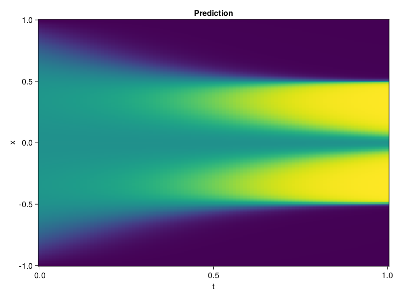

Allen-Cahn Equation with Sequential Training
In this tutorial we are going to solve the Allen-Cahn equation with periodic boundary condition from $t=0$ to $t=1$. The traning process is split into four stages, namely $t\in [0,0.25]$, $t\in [0.0,0.5]$, $t\in [0.0,0.75]$ and $t\in [0.0, 1.0]$.
using ModelingToolkit, IntervalSets
using Sophon
using Optimization, OptimizationOptimJL
@parameters t, x
@variables u(..)
Dₓ = Differential(x)
Dₓ² = Differential(x)^2
Dₜ = Differential(t)
eq = Dₜ(u(x, t)) - 0.0001 * Dₓ²(u(x, t)) + 5 * u(x,t) * (abs2(u(x,t)) - 1.0) ~ 0.0
domain = [x ∈ -1.0..1.0, t ∈ 0.0..0.25]
bcs = [u(x,0) ~ x^2 * cospi(x),
u(-1,t) ~ u(1,t)]
@named allen = PDESystem(eq, bcs, domain, [x, t], [u(x, t)])\[ \begin{align} - 0.0001 \frac{\mathrm{d}}{\mathrm{d}x} \frac{\mathrm{d}}{\mathrm{d}x} u\left( x, t \right) + 5 \left( -1 + \left|u\left( x, t \right)\right|^{2} \right) u\left( x, t \right) + \frac{\mathrm{d}}{\mathrm{d}t} u\left( x, t \right) =& 0 \end{align} \]
Then we define the neural net, the sampler, and the training strategy.
chain = FullyConnected(2, 1, tanh; hidden_dims=16, num_layers=4)
pinn = PINN(chain)
sampler = QuasiRandomSampler(500, (300, 100))
strategy = NonAdaptiveTraining(1, (50, 1))
prob = Sophon.discretize(allen, pinn, sampler, strategy)OptimizationProblem. In-place: true
u0: ComponentVector{Float64}(layer_1 = (weight = [-1.3313720226287842 -0.8122926354408264; -1.9010038375854492 0.7758890390396118; … ; -1.2760374546051025 -0.9653235673904419; -1.5810250043869019 1.6038264036178589], bias = [0.0; 0.0; … ; 0.0; 0.0;;]), layer_2 = (weight = [-0.33189657330513 -0.1624441295862198 … -0.32672494649887085 -0.1572241336107254; -0.17433932423591614 -0.6393235921859741 … 0.14678175747394562 0.46469971537590027; … ; 0.08264094591140747 0.525858998298645 … -0.3452220559120178 0.31589069962501526; -0.0941530391573906 -0.619573175907135 … 0.5798105597496033 -0.5847040414810181], bias = [0.0; 0.0; … ; 0.0; 0.0;;]), layer_3 = (weight = [-0.2332913875579834 -0.6696597337722778 … 0.4251844882965088 0.19948627054691315; 0.19906385242938995 -0.4819706976413727 … -0.4485614001750946 0.2667679488658905; … ; -0.1811906397342682 0.6113913655281067 … -0.2671137750148773 0.44005724787712097; 0.25088679790496826 -0.42523396015167236 … 0.23581349849700928 0.5058002471923828], bias = [0.0; 0.0; … ; 0.0; 0.0;;]), layer_4 = (weight = [-0.5556807518005371 0.0385599210858345 … -0.3258513808250427 0.6776742935180664; 0.3368823826313019 -0.5473070740699768 … 0.704664945602417 -0.31420135498046875; … ; 0.29801860451698303 0.6687198281288147 … 0.4471900463104248 0.4561542272567749; -0.07881131768226624 0.6760701537132263 … -0.4519008994102478 -0.6870284080505371], bias = [0.0; 0.0; … ; 0.0; 0.0;;]), layer_5 = (weight = [-0.45244866609573364 -0.6607655882835388 … -0.3719032108783722 0.3276388645172119], bias = [0.0;;]))We solve the equation sequentially in time.
function train(allen, prob, sampler, strategy)
bfgs = BFGS()
res = Optimization.solve(prob, bfgs; maxiters=2000)
for tmax in [0.5, 0.75, 1.0]
allen.domain[2] = t ∈ 0.0..tmax
data = Sophon.sample(allen, sampler)
prob = remake(prob; u0=res.u, p=data)
res = Optimization.solve(prob, bfgs; maxiters=2000)
end
return res
end
res = train(allen, prob, sampler, strategy)u: ComponentVector{Float64}(layer_1 = (weight = [-1.9145921209628847 -0.907403131322895; -2.0975103605026604 0.5855208486763457; … ; -2.3196133019687375 -1.2569166046951894; -3.14752822653611 1.4667295689821938], bias = [1.6716455582634688; -0.6592906184613307; … ; -0.06928911388320154; -0.1519718096664051;;]), layer_2 = (weight = [-0.5318461637591307 0.05292071243909095 … -1.2529632723217885 0.6532313894974817; -0.05471130663975374 -0.8247523152325182 … 0.47686068056677594 0.19624611661133592; … ; 0.43254862590133064 0.8991142378282417 … -0.20422795485135484 -0.06335299683017483; -0.08407157883912184 -0.6751620987749657 … 0.7664231974839881 -0.5682163339481987], bias = [0.4342105780804945; 0.3276249675438981; … ; 0.1008318038044294; 0.5606906202591124;;]), layer_3 = (weight = [-1.6802141537279962 -0.36674065362020813 … 0.2501978879420307 0.5398003949002325; 0.5297534429764762 -0.2552687257903536 … -0.3990061096747614 0.36293725055802634; … ; -0.006368945137701443 1.3644662642761782 … -1.5092873473968926 0.4301356601467583; 0.27451256963315684 -0.16357485233117575 … -0.27546542402882856 0.6983731794445399], bias = [0.08912714343678758; 0.13136345729425375; … ; 0.1742946578647589; -0.13958637162849594;;]), layer_4 = (weight = [-0.32264650546903817 -0.04856602453217428 … -0.8749920662853377 0.16749407649810272; 0.30506859534988134 -0.5112655683187204 … 0.7293285414996961 -0.3997535187434425; … ; 0.04602794828250855 0.5395606298445785 … 0.22527010393293762 0.7803179300562635; -0.49218492580443224 1.0428997303733474 … 0.04482261530156669 -0.5729785692103302], bias = [0.019632809348137638; 0.4044107395624691; … ; 0.18876101990862176; -0.3045378675488424;;]), layer_5 = (weight = [0.696028714987393 -0.9807423037107037 … -0.09818307442322036 0.9006995967057506], bias = [-0.5130278523197067;;]))Let's plot the result.
using CairoMakie
phi = pinn.phi
xs, ts = [infimum(d.domain):0.01:supremum(d.domain) for d in allen.domain]
axis = (xlabel="t", ylabel="x", title="Prediction")
u_pred = [sum(pinn.phi([x, t], res.u)) for x in xs, t in ts]
fig, ax, hm = heatmap(ts, xs, u_pred', axis=axis)